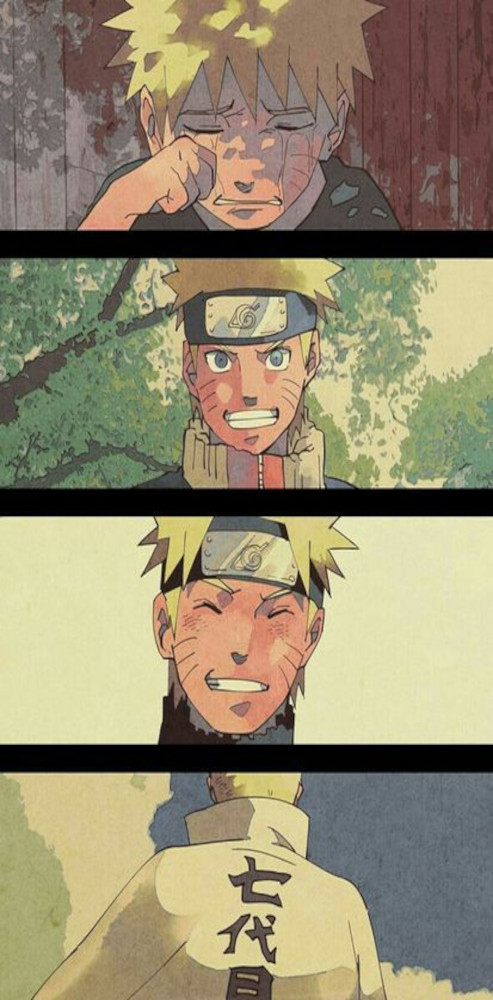
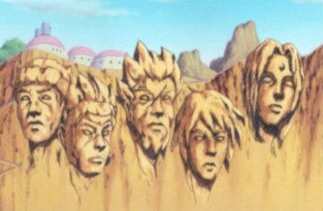
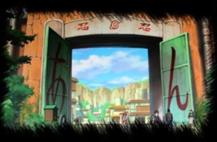
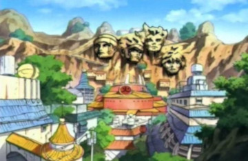

Naruto Uzumaki é um garoto que vive na Aldeia da Folha, a vila ninja no País do Fogo. ... Aos doze anos, o menino torna-se extremamente hiperativo, incompreendido e solitário; e tem como sonho tornar-se o Hokage de sua vila. Sendo assim, reconhecido por todos como um ninja poderoso e respeitado.Mas éssa história de superação não é simples assim , pois precisou enfrentar seus piores medo e os maiores desafios de um ninja.

(Naruto Uzumaki:Quando éra um menino , até tornar-se Hokage.by:Pinterest)
Aparência de Naruto Uzumaki
Preencha o Formulário , e veja o resultado!
Más, Naruto não está sozinho nessa jornada
Equipe 7: A equipe 7, também conhecida como Time Kakashi, tem como seus membros Naruto Uzumaki, Sakura Haruno e Sasuke Uchiha. A equipe é liderada por Kakashi Hatake.
Naruto, Sasuke e Sakura são organizados em uma equipe após a sua graduação na Academia, a fim de equilibrar os seus talentos: Naruto, o pior aluno de sua classe, se beneficiaria da inteligência de Sakura e da proficiência em ninjutsu de Sasuke; Sakura se beneficiaria da capacidade de combate de seus companheiros; Sasuke se beneficiaria aprendendo a trabalhar em equipe. Kakashi é selecionado para treiná-los, a fim de manter um olho em Naruto, o jinchūrikido Nove-Caudas e, no anime, para ajudar Sasuke a lidar com a sua vida após o Massacre do Clã Uchiha. Tal como aconteceu com todas as equipes genin anteriores, Kakashi os encarrega de cumprirem um teste do sino, a fim de determinar se eles dão a devida importância ao trabalho em equipe. Ao contrário de todas as equipes genin anteriores, Naruto, Sasuke e Sakura conseguem passar no teste.
(Time 7:"Time Kakashi",Clip e Musica em português.)
Aldeia da Folha Konohagakure
Konohagakure (木ノ葉隠れの里, Konohagakure no Sato; Literalmente significa "Vila Oculta da Folha") é a vila oculta do País do Fogo. Embora geralmente vista como a mais poderosa das aldeias shinobi, Konoha tem desfrutado de muitos anos de relativa paz e estabilidade.



Konoha tem a sua localização no País do Fogo, além de ser uma das Cinco Grandes Vilas Shinobi. O líder da aldeia é conhecido como Hokage, existindo sete no total até o momento, cargo atual é de Naruto Uzumaki. É umas das aldeias mais poderosas, tanto no poder militar como em influência no mundo dos ninjas, sendo bem pacífica nos dias atuais, usufruindo das novas tecnologias.